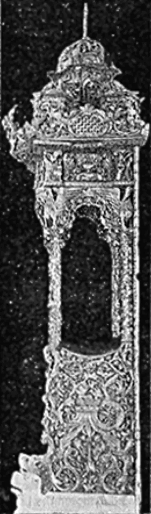

Tarihçe · 1944
Meryem Ana kilisesinin ayrıntıları
Meryem Ana katedral kilisesinin içinden 13 fotoğraf. Daha fazlası: Hristiyan kiliseleri.

Meryem Ana'nın içi - katedral kilise. Solda derin oymalı minber, sağda sunağa yakın sütunun yanında piskopos tahtı var.

Kilisenin kuzey nefi, minber ve
kraliyet tahtı.

Piskopos tahtıyla güney nef.

1838'de sanatsal ahşap oymayla yapılan minber ve yanındaki merdiven.


Meryem Ana kilisesindeki piskopos tahtı,
1838'de yapılmış.

Kilisedeki kraliyet tahtı.

İkonostas ve piskopos tahtıyla Meryem Ana kilisesinin orta nefi.

Tavanında kör kubbe bulunan kilisenin orta nefinin üst kısmı.

İkonostasın üst kısmı (derin oyma) 1838'de ceviz ağacından, alt kısmı beyaz mermerden yapıldı.

Batı tarafı ve kadınlar galerisi.

Kilisenin orta nefinin sütunları ve duvarının görünümü (kuzey taraf).

Mermer ikonostasın sağ tarafı, Kurtarıcı İsa ve Vaftizci Aziz Yahya ikonalarıyla.

Mermer ikonostasın sol tarafı, Kutsal Meryem Ana ve onun Doğuşu ikonalarıyla.